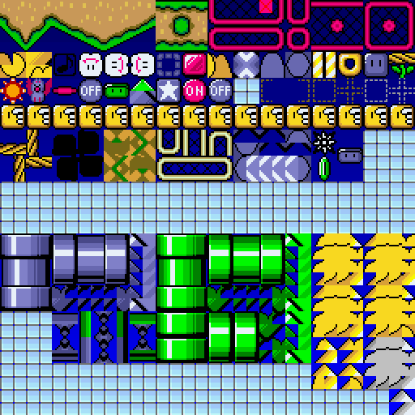

It's a build tool that manages your project and does all the usual romhacking things through a simple user interface with a few actions.
Callisto designed to run tools only when needed and avoid potential conflicts between resources, this way it insures your hack is cleanly constructed whenever you make changes. The big upside of using this is if something goes wrong then you can easily pinpoint what that was and remove or fix it so the next time you build it is not included in your project.
Read the Callisto documentation in the docs/tools/Callisto folder for more detailed information about how to use this tool.
Lunar Helper from the 4.x version of the baserom has been succeeded by Callisto, which is detailed above. Callisto functions in much the same way as Lunar Helper–as a tool that handles all other tools, and builds and updates your project with simple commands–but it was rebuilt to have better cross-platform support and improved performance.
In an effort to keep the baserom lean, we're going all-in on the Callisto build tool. The build batch files, while useful, were also a bit of maintainance burden and didn't work for some people.
To get people familiar with the build process of the baserom we've opted to not include the BPS patch to create a ready-to-use baserom. The very simple initialization steps will create a clean slate to get started on a project.
If you are in need of a BPS file, Callisto can create one with the "Package" action, or from the button on the included User Toolbar.
Callisto makes it easy to remove items from the baserom without a problem as it re-builds your ROM from scratch avoiding resource conflicts. See the Baserom Basics page for more details on that.
If you just want to disable it in a single level, this baserom comes with several insertable custom objects to toggle features per-level. including one to hide the status bar. Check out the UberASM Objects documentation for details.
If you would like to disable it hack-wide, there is a method for that as well:
init:
;jsl toggle_statusbar_init
jsl uberasm_objects_init
rtl
jsl toggle_statusbar_init and save the file.The baserom aims to stay close to the vanilla experience so midways keep their default behaviour of making Mario big when they are collected, but this can be overridden in the baserom in a couple ways:
!midway_powerup option in the tools/uberasmtool/retry_config/settings.asm file.After making changes to any of the above, run "Update" in Callisto to insert the UberASM changes in your project.
By default the baserom is configured to use the vanilla death routine but you can enable retry in a level using a custom object. The UberASM Objects page has a section for the retry system with details.
For hack-wide changes to the Retry System you can edit its global configuration files in tools/uberasmtool/retry_config.
After making changes to any of the above, run "Update" in Callisto to insert the UberASM changes in your project.

Many of the custom global block in the baserom use ExGraphics and a custom palette. Loading E17 into the FG2 slot in the Super GFX Bypass dialog and importing the "CustomBlocks.pal" from resources/palette will make the tiles appear as they are intended to.
If you're using a background resource that uses slot BG3 you may notice some of the tiles from the baserom's ExAnimations in its tilemap, this is because the addresses at the end of that slot are being used as the destinations for those animations. To stop this from happening you can disable global animations in that level from the menu: "Level → Edit Animation Settings" and uncheck "Enable Lunar Magic's global animations".
The baserom's resources are all compatible with SA-1, but the baserom itself is configured to be FastROM by default. However to use SA-1 it only takes a couple steps to switch over to it:
In the buildtool folder, open the "build.toml" file and look for the initial_patch lines, something like the following.
# The initial patch setting for the project
[resources]
initial_patch = "resources/initial_patches/fastrom.bps" # FastROM
#initial_patch = "resources/initial_patches/sa1.bps" # SA-1
To change which initial patch is used, comment out (i.e. move the "#") the relevant initial_patch line, and "Rebuild" your project in Callisto to make the change.
You will have to check if any additional resources that you add are SA-1 compatible when doing this.
If you're worrying about this, it's likely because you've ran a Callisto action and are seeing something scary like the following:
Caching modules
2 conflict(s) logged to C:\path\project\buildtool\conflicts.txt
Moving temporary files to final output
One of the features of the Callisto tool is to detect when two or more resources are modifying the same parts of the ROM. This is to help you address resource conflicts by showing you which bytes are in conflict and compare them to the original ROM bytes.
Unfortunately, some of the tools in the baserom are writing to the same bytes so there are some unavoidable conflicts occuring. But not to worry as they seem to have no adverse affect.
However, if you are seeing more than those 2 known conflicts, something else may be at issue in your project.
If you have never used Lunar Magic before, it automatically tries to set up its built-in restore system so you don't lose edits and can recover from any problems that occur on your ROM. When setting up the baserom, you may therefore encounter an error like the following.
The restore system cannot locate a copy of the original unmodified ROM with header, which is required for an operation about to be performed. Would you like to browse for a copy of this file now? (Y/N)
If you do see this and a File Chooser window appears, simply browse for a clean, headered copy of your Super Mario World ROM and open it so Lunar Magic can be satisfied.
Additionally, newer versions of Lunar Magic (3.40+) have changed how the restore system works by keeping the location of a known clean ROM in the Windows registry so if you haven't yet used a newer version of Lunar Magic you may also see this message. You can resolve it by opening Lunar Magic outside of the baserom project and following its prompt to find a clean ROM.
You can confirm it's set up by opening Windows' Registry Editor, browsing to HKEY_CURRENT_USER\Software\LunarianConcepts\LunarMagic\Settings you can find Lunar Magic's stored settings, and checking for the "OrigROM0" key.
The baserom's initialization scripts use PowerShell to do a lot of the actions for setting up the baserom. Depending on how your Windows system is configured you may be unable to run scripts by default and will see an error something like the following:
C:\User\Project\Path\baserom_init.ps1 cannot be loaded because running scripts is disabled on this system.
This has to do with Windows' "Execution Policies", and if your computer has a "Restricted" policy you may have trouble running the scripts. This help article from Microsoft goes into detail about Execution Policy and gives instructions about how you might go about changing it to be a bit more permissive (and let you run scripts).
That said, there are some cases where you will be unable to change it because of how pre-installed Windows may have been configured, which will unfortunately make setting up the baserom quickly a challenge.